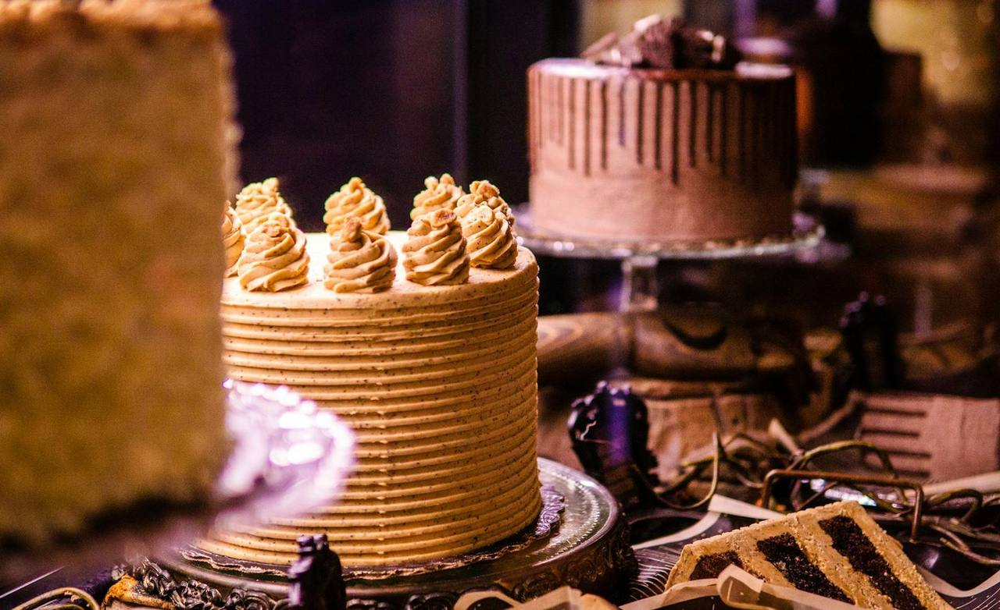
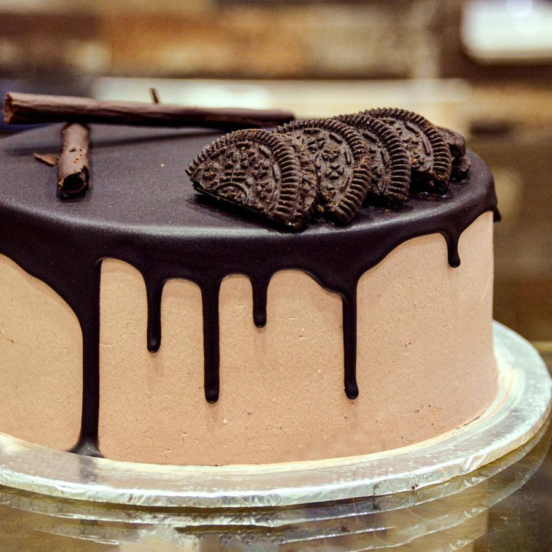
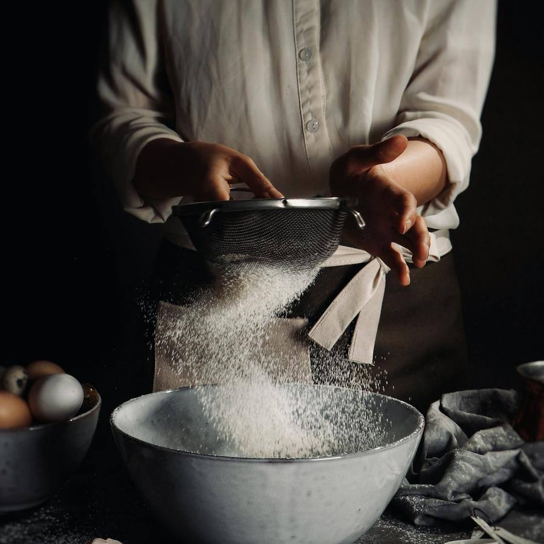

Pastelería y obrador · Sector V, Elche
Tartas de encargo, hechas a mano
Mantequilla de verdad, fruta de temporada y nada de premezclas. Encarga tu tarta con dos días de antelación y la recoges a tu hora, también sin gluten y sin lactosa.



Por qué Obrador Dulce Abril
Lo que nos diferencia
Todo de obrador
Masas, cremas y rellenos hechos aquí cada mañana.
Tartas con tu foto
Personalizadas para cumpleaños, comuniones y bodas.
Sin gluten y sin lactosa
Con protocolo de alérgenos para que comáis todos.
Recoge a tu hora
Encarga, elige la hora y te la tenemos lista.
Pastelería y obrador
Tartas y dulces
Precios para 8-10 raciones. Para más personas, te decimos el tamaño.
Tartas
Tarta de queso
28 €Al horno, cremosa por dentro.
favoritoTarta de chocolate
30 €Tres chocolates sobre galleta.
Tarta de frutos rojos
32 €Bizcocho, nata y fruta de temporada.
Naked cake
38 €Bizcocho a la vista con flores comestibles.
nuevo
Para celebrar

Tarta de cumpleaños
desde 35 €Con nombre y decoración a elegir.
favoritoTarta personalizada
desde 45 €Con tu foto o tu diseño. Una semana de antelación.
Tarta sin gluten
34 €Queso o chocolate.
Dulces
Bandeja de dulces
22 €24 piezas variadas.
Caja de galletas
12 €Mantequilla, 12 unidades.
Croissant de mantequilla
1,60 €Recién hecho, de 8:00 a 11:00.
Galería
Pásate a verlo
Fotos del local y de lo que hacemos. Pulsa para verlas en grande.
Reseñas
Lo que dicen de nosotros
Reseñas de ejemplo: en tu web van las tuyas, enlazadas a tu ficha de Google.
- Laura S.hace 5 días5 de 5
La tarta de queso más rica de Elche, sin discusión.
- Mario P.hace 2 semanas5 de 5
Encargué la tarta de cumple de mi hija con su dibujo y lloró de emoción.
- Beatriz C.hace 1 mes5 de 5
Soy celíaca y por fin una tarta que no sabe a «sin». Gracias.
- Alberto R.hace 2 meses4 de 5
Riquísimo todo. Los domingos a media mañana ya no quedan croissants.
- Nieves F.hace 1 semana5 de 5
Encargo fácil desde el móvil y la tarta lista a la hora exacta.
Encargar tarta
Tu tarta en tres pasos
- 1
Elige tarta y tamaño
O cuéntanos tu idea.
- 2
Elige día y hora
Con 48 horas de antelación.
- 3
Recógela
Lista y en su caja.
Visítanos
Dónde estamos
Horario
| Lunes | Cerrado |
|---|---|
| Martes | 8:00 – 14:00 y 17:00 – 20:30 |
| Miércoles | 8:00 – 14:00 y 17:00 – 20:30 |
| Jueves | 8:00 – 14:00 y 17:00 – 20:30 |
| Viernes | 8:00 – 14:00 y 17:00 – 20:30 |
| Sábado | 8:00 – 14:00 y 17:00 – 20:30 |
| Domingo | 8:30 – 14:00 |
Cómo llegar
- En la plaza del Sector V
- Aparcamiento fácil en la calle
- Vitrina refrigerada para llevar en coche
Contacto
¿Con cuánta antelación encargo?
Con 48 horas para tartas normales; una semana para las personalizadas.
¿Hacéis tartas sin gluten?
Sí, en obrador con protocolo para alérgenos.
¿Hacéis tartas de boda?
Sí. Pide cita para la prueba de sabores.
¿Abrís el lunes?
No, el lunes descansamos. De martes a domingo, sí.
Te esperamos en Sector V
Mantequilla de verdad, fruta de temporada y nada de premezclas.
Encargar tarta¿Quieres una web así para tu negocio?
Obrador Dulce Abril es un negocio inventado: esta página es una plantilla de ejemplo. La adapto a tu negocio con tus fotos, tus precios, tus reseñas y tu forma de reservar. Pruébala tal cual: la reserva funciona, pero no envía nada a nadie.
- Carta o servicios por categorías, galería y reseñas
- Reserva o cita en pocos pasos, con aviso por WhatsApp
- Lista para el móvil, rápida y sin cookies de terceros
- Aviso legal, privacidad y cookies incluidos